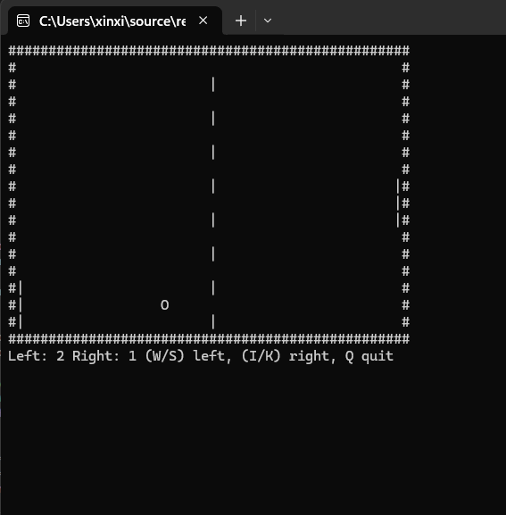

Xinxing Wu
<p class='titlep'> </p> # Project 3: Play Ping Pong <hr> <br> Xinxing Wu
# Outline [<p class="hover-underline-animation">Goal</p>](#/ch1) [<p class="hover-underline-animation">Steps</p>](#/ch2) [<p class="hover-underline-animation">Prior knowledge</p>](#/ch3)
# Outline (Cont.) [<p class="hover-underline-animation">Code</p>](#/ch4) [<p class="hover-underline-animation">Ideas for Improving</p>](#/ch5) [<p class="hover-underline-animation">Testing \& Submissions</p>](#/ch6)
## Goal <div id="shadebox-neon" class="shadebox neon"> Use Week 2, Week 5, Week 9-12 to build a smooth real-time game: </div>
<p class="definition-rainbow-title">Goal</p>
<div class="definition-pro-Y-container"> <div class="definition-pro-Y-title">Goal</div> <div class="definition-pro-Y-shadebox"> - two paddles and a ball as objects - inheritance for shared entity fields - timing model (frame speed vs ball speed) - collision and scoring </div> </div> </div>
<p class="definition-rainbow-title">Steps</p>
<div class="definition-pro-Y-container"> <div class="definition-pro-Y-title">Steps</div> <div class="definition-pro-Y-shadebox"> - Step 1: Entity base (Week 12 inheritance foundation) <div id="shadebox-glass" class="shadebox glass"> - x, y, icon </div> </div> </div> <div class="definition-pro-Y-container"> <div class="definition-pro-Y-title">Steps</div> <div class="definition-pro-Y-shadebox"> - Step 2: Paddle class (Week 10 objects + Week 11 encapsulation) <div id="shadebox-glass" class="shadebox glass"> - up() and down() with boundaries - hitsBall(ballY) explains collision window (3 tall) </div> </div> </div> <div class="definition-pro-Y-container"> <div class="definition-pro-Y-title">Steps</div> <div class="definition-pro-Y-shadebox"> - Step 3: Ball class (Week 10 + Week 2 logic) <div id="shadebox-glass" class="shadebox glass"> - stores dx, dy - step(), reset(dir) </div> </div> </div> <div class="definition-pro-Y-container"> <div class="definition-pro-Y-title">Steps</div> <div class="definition-pro-Y-shadebox"> - Step 4: Frame speed vs ball speed (Week 9) <div id="shadebox-glass" class="shadebox glass"> - paddles update every 16ms - ball moves every BALL_STEP_MS </div> </div> </div> <div class="definition-pro-Y-container"> <div class="definition-pro-Y-title">Steps</div> <div class="definition-pro-Y-shadebox"> - Step 5: Wall bounce logic (Week 2 boolean) <div id="shadebox-glass" class="shadebox glass"> - if (ball.y <= 1 || ball.y >= H - 2) </div> </div> </div> <div class="definition-pro-Y-container"> <div class="definition-pro-Y-title">Steps</div> <div class="definition-pro-Y-shadebox"> - Step 6: Paddle collision logic <div id="shadebox-glass" class="shadebox glass"> - left side at ball.x == 2 - right side at ball.x == W - 3 - hit window from hitsBall </div> </div> </div> <div class="definition-pro-Y-container"> <div class="definition-pro-Y-title">Steps</div> <div class="definition-pro-Y-shadebox"> - Step 7: Score + reset <div id="shadebox-glass" class="shadebox glass"> - out left/right changes score - reset ball center and direction' </div> </div> </div>
<p class="definition-rainbow-title">Prior knowledge</p>
<div id="rainbow-type">Prior knowledge</div> <div style="display:flex; gap:16px; justify-content:center; flex-wrap:wrap;"> <div class="liquid-glass"> <h2 style="margin:0 0 10px; font-size:30px; line-height:1.1; letter-spacing:0.2px;">Week 2</h2> <hr style="border:0;height:3px;border-radius:999px;background:linear-gradient(90deg,#ff004c,#ffb300,#00e5ff,#7c4dff,#ff004c);background-size:300% 100%;animation:hrflow 3.5s linear infinite;box-shadow:0 0 12px rgba(0,0,0,.25);"> <style>@keyframes hrflow{0%{background-position:0% 50%}100%{background-position:100% 50%}}</style> <p style="margin:0; font-size:22px; line-height:1.55; opacity:0.92;">logic and method calls</p> </div> <div class="liquid-glass"> <h2 style="margin:0 0 10px; font-size:30px; line-height:1.1; letter-spacing:0.2px;">Week 5</h2> <hr style="border:0;height:3px;border-radius:999px;background:linear-gradient(90deg,#ff004c,#ffb300,#00e5ff,#7c4dff,#ff004c);background-size:300% 100%;animation:hrflow 3.5s linear infinite;box-shadow:0 0 12px rgba(0,0,0,.25);"> <style>@keyframes hrflow{0%{background-position:0% 50%}100%{background-position:100% 50%}}</style> <p style="margin:0; font-size:22px; line-height:1.55; opacity:0.92;">string frame building for rendering</p> </div> <div style="display:flex; gap:16px; justify-content:center; flex-wrap:wrap;"> <div class="liquid-glass"> <h2 style="margin:0 0 10px; font-size:30px; line-height:1.1; letter-spacing:0.2px;">Week 9</h2> <hr style="border:0;height:3px;border-radius:999px;background:linear-gradient(90deg,#ff004c,#ffb300,#00e5ff,#7c4dff,#ff004c);background-size:300% 100%;animation:hrflow 3.5s linear infinite;box-shadow:0 0 12px rgba(0,0,0,.25);"> <style>@keyframes hrflow{0%{background-position:0% 50%}100%{background-position:100% 50%}}</style> <p style="margin:0; font-size:22px; line-height:1.55; opacity:0.92;">GetAsyncKeyState, GetTickCount, Sleep</p> </div> <div class="liquid-glass"> <h2 style="margin:0 0 10px; font-size:30px; line-height:1.1; letter-spacing:0.2px;">Week 10</h2> <hr style="border:0;height:3px;border-radius:999px;background:linear-gradient(90deg,#ff004c,#ffb300,#00e5ff,#7c4dff,#ff004c);background-size:300% 100%;animation:hrflow 3.5s linear infinite;box-shadow:0 0 12px rgba(0,0,0,.25);"> <style>@keyframes hrflow{0%{background-position:0% 50%}100%{background-position:100% 50%}}</style> <p style="margin:0; font-size:22px; line-height:1.55; opacity:0.92;">class design</p> </div> </div> <div style="display:flex; gap:16px; justify-content:center; flex-wrap:wrap;"> <div class="liquid-glass"> <h2 style="margin:0 0 10px; font-size:30px; line-height:1.1; letter-spacing:0.2px;">Week 11</h2> <hr style="border:0;height:3px;border-radius:999px;background:linear-gradient(90deg,#ff004c,#ffb300,#00e5ff,#7c4dff,#ff004c);background-size:300% 100%;animation:hrflow 3.5s linear infinite;box-shadow:0 0 12px rgba(0,0,0,.25);"> <style>@keyframes hrflow{0%{background-position:0% 50%}100%{background-position:100% 50%}}</style> <p style="margin:0; font-size:22px; line-height:1.55; opacity:0.92;">encapsulation</p> </div> <div class="liquid-glass"> <h2 style="margin:0 0 10px; font-size:30px; line-height:1.1; letter-spacing:0.2px;">Week 12</h2> <hr style="border:0;height:3px;border-radius:999px;background:linear-gradient(90deg,#ff004c,#ffb300,#00e5ff,#7c4dff,#ff004c);background-size:300% 100%;animation:hrflow 3.5s linear infinite;box-shadow:0 0 12px rgba(0,0,0,.25);"> <style>@keyframes hrflow{0%{background-position:0% 50%}100%{background-position:100% 50%}}</style> <p style="margin:0; font-size:22px; line-height:1.55; opacity:0.92;">inheritance</p> </div> </div> </div> <div id="rainbow-type"> Prior knowledge (Cont.)</div> <div class="enum-bigidea-wrapper"> <style> .enum-bigidea-wrapper .big-idea-callout{ margin: 16px 0; padding: 12px 14px; border-radius: 12px; background: rgba(255,255,255,0.04); border: 1px solid rgba(255,255,255,0.12); color: #eaf3ff; line-height: 1.55; font-size: 25px; border-left: 5px solid rgba(132, 255, 170, 0.85); box-shadow: 0 0 0 1px rgba(132, 255, 170, 0.08); /* ✅ align left */ text-align: left; } .enum-bigidea-wrapper .big-idea-callout b{ font-weight: 700; } .enum-bigidea-wrapper .big-idea-callout code{ font-family: Consolas, Monaco, monospace; font-size: 0.95em; padding: 2px 6px; border-radius: 8px; background: rgba(0,0,0,0.25); border: 1px solid rgba(255,255,255,0.10); } </style> <div class="big-idea-callout"> <b>Questions:</b> Explain why ball speed is controlled separately </div> <div class="big-idea-callout"> <b>Questions:</b> Change BALL_STEP_MS (optional) and report impact </div> </div>
<p class="definition-rainbow-title">Code</p>
<div id="shadebox"> ### An answer - Simple Version <hr style="border: none; border-top: 1.5px solid cyan;"> ``` #include <iostream> #include <windows.h> #include <ctime> #include <cstdlib> #include <string> using namespace std; const int W = 50; const int H = 18; void enableANSI() { HANDLE hOut = GetStdHandle(STD_OUTPUT_HANDLE); DWORD mode = 0; GetConsoleMode(hOut, &mode); mode |= ENABLE_VIRTUAL_TERMINAL_PROCESSING; SetConsoleMode(hOut, mode); } bool keyDown(int vk) { return (GetAsyncKeyState(vk) & 0x8000) != 0; } int main() { enableANSI(); srand((unsigned)time(nullptr)); int leftY = H / 2; int rightY = H / 2; int ballX = W / 2, ballY = H / 2; int dx = (rand() % 2 == 0) ? 1 : -1; int dy = (rand() % 2 == 0) ? 1 : -1; int leftScore = 0, rightScore = 0; bool quit = false; cout << "\x1b[?25l"; // hide cursor cout << "\x1b[2J"; // clear once // Smooth frame rate (paddles feel responsive) const int FRAME_MS = 16; // ~60 FPS // Slow ball only (keep paddles smooth) int ballTimer = 0; const int BALL_STEP_MS = 120; // bigger = slower ball (try 80, 120, 160) while (!quit) { DWORD start = GetTickCount(); // -------- INPUT (smooth) -------- if (keyDown('Q')) quit = true; if (keyDown('W') && leftY > 1) leftY--; if (keyDown('S') && leftY < H - 2) leftY++; if (keyDown('I') && rightY > 1) rightY--; if (keyDown('K') && rightY < H - 2) rightY++; // -------- LOGIC -------- bool movedBall = false; ballTimer += FRAME_MS; if (ballTimer >= BALL_STEP_MS) { ballTimer = 0; ballX += dx; ballY += dy; movedBall = true; } // Only check ball collisions when the ball actually moved if (movedBall) { // bounce top/bottom if (ballY <= 1 || ballY >= H - 2) dy = -dy; // left paddle collision (x==2) if (ballX == 2) { if (ballY >= leftY - 1 && ballY <= leftY + 1) dx = 1; } // right paddle collision (x==W-3) if (ballX == W - 3) { if (ballY >= rightY - 1 && ballY <= rightY + 1) dx = -1; } // score if (ballX <= 0) { rightScore++; ballX = W / 2; ballY = H / 2; dx = 1; dy = (rand() % 2 == 0) ? 1 : -1; } if (ballX >= W - 1) { leftScore++; ballX = W / 2; ballY = H / 2; dx = -1; dy = (rand() % 2 == 0) ? 1 : -1; } } // -------- DRAW (fast: build frame once) -------- string frame; frame.reserve((W + 1) * (H + 2) + 80); frame += "\x1b[H"; // move cursor to top-left for (int i = 0; i < W; i++) frame += '#'; frame += '\n'; for (int y = 1; y < H - 1; y++) { for (int x = 0; x < W; x++) { char c = ' '; if (x == 0 || x == W - 1) c = '#'; if (x == W / 2 && y % 2 == 0) c = '|'; if (x == 1 && (y >= leftY - 1 && y <= leftY + 1)) c = '|'; if (x == W - 2 && (y >= rightY - 1 && y <= rightY + 1)) c = '|'; if (x == ballX && y == ballY) c = 'O'; frame += c; } frame += '\n'; } for (int i = 0; i < W; i++) frame += '#'; frame += '\n'; frame += "Left: " + to_string(leftScore) + " Right: " + to_string(rightScore) + " (W/S) left, (I/K) right, Q quit\n"; cout << frame; cout.flush(); // -------- FRAME LIMIT -------- DWORD elapsed = GetTickCount() - start; if (elapsed < (DWORD)FRAME_MS) Sleep(FRAME_MS - elapsed); } cout << "\x1b[?25h"; // show cursor cout << "\nThanks for playing!\n"; return 0; } ``` </div> <div id="shadebox"> ### An answer - OOP + Inheritance <hr style="border: none; border-top: 1.5px solid cyan;"> ``` #include <iostream> #include <windows.h> #include <ctime> #include <cstdlib> #include <string> using namespace std; const int W = 50; const int H = 18; void enableANSI() { HANDLE hOut = GetStdHandle(STD_OUTPUT_HANDLE); DWORD mode = 0; GetConsoleMode(hOut, &mode); mode |= ENABLE_VIRTUAL_TERMINAL_PROCESSING; SetConsoleMode(hOut, mode); } bool keyDown(int vk) { return (GetAsyncKeyState(vk) & 0x8000) != 0; } class Entity { public: int x; int y; char icon; Entity(int startX, int startY, char ch) { x = startX; y = startY; icon = ch; } virtual ~Entity() { } }; class Paddle : public Entity { public: Paddle(int startX, int startY) : Entity(startX, startY, '|') { } void up() { if (y > 1) y--; } void down() { if (y < H - 2) y++; } bool hitsBall(int ballY) const { return (ballY >= y - 1 && ballY <= y + 1); } }; class Ball : public Entity { public: int dx; int dy; Ball() : Entity(W / 2, H / 2, 'O') { dx = 1; dy = 1; } void reset(int dirX) { x = W / 2; y = H / 2; dx = dirX; dy = (rand() % 2 == 0) ? 1 : -1; } void step() { x += dx; y += dy; } void bounceVertical() { dy = -dy; } }; int main() { enableANSI(); srand((unsigned)time(nullptr)); Paddle leftPaddle(1, H / 2); Paddle rightPaddle(W - 2, H / 2); Ball ball; int leftScore = 0; int rightScore = 0; bool quit = false; cout << "\x1b[?25l"; cout << "\x1b[2J"; const int FRAME_MS = 16; int ballTimer = 0; const int BALL_STEP_MS = 120; while (!quit) { DWORD start = GetTickCount(); if (keyDown('Q')) quit = true; if (keyDown('W')) leftPaddle.up(); if (keyDown('S')) leftPaddle.down(); if (keyDown('I')) rightPaddle.up(); if (keyDown('K')) rightPaddle.down(); bool movedBall = false; ballTimer += FRAME_MS; if (ballTimer >= BALL_STEP_MS) { ballTimer = 0; ball.step(); movedBall = true; } if (movedBall) { if (ball.y <= 1 || ball.y >= H - 2) { ball.bounceVertical(); } if (ball.x == 2) { if (leftPaddle.hitsBall(ball.y)) { ball.dx = 1; } } if (ball.x == W - 3) { if (rightPaddle.hitsBall(ball.y)) { ball.dx = -1; } } if (ball.x <= 0) { rightScore++; ball.reset(1); } if (ball.x >= W - 1) { leftScore++; ball.reset(-1); } } string frame; frame.reserve((W + 1) * (H + 2) + 120); frame += "\x1b[H"; for (int i = 0; i < W; i++) frame += '#'; frame += '\n'; for (int y = 1; y < H - 1; y++) { for (int x = 0; x < W; x++) { char c = ' '; if (x == 0 || x == W - 1) c = '#'; if (x == W / 2 && y % 2 == 0) c = '|'; if (x == leftPaddle.x && (y >= leftPaddle.y - 1 && y <= leftPaddle.y + 1)) c = leftPaddle.icon; if (x == rightPaddle.x && (y >= rightPaddle.y - 1 && y <= rightPaddle.y + 1)) c = rightPaddle.icon; if (x == ball.x && y == ball.y) c = ball.icon; frame += c; } frame += '\n'; } for (int i = 0; i < W; i++) frame += '#'; frame += '\n'; frame += "Left: " + to_string(leftScore) + " Right: " + to_string(rightScore) + " (W/S) left, (I/K) right, Q quit\n"; cout << frame << flush; DWORD elapsed = GetTickCount() - start; if (elapsed < (DWORD)FRAME_MS) Sleep(FRAME_MS - elapsed); } cout << "\x1b[?25h"; cout << "\nThanks for playing!\n"; return 0; } ``` </div>
<p class="definition-rainbow-title">Ideas for Improving</p>
<div class="definition-pro-Y-container"> <div class="definition-pro-Y-title">Ideas for Improving</div> <div class="definition-pro-Y-shadebox"> - Add a “Play again” and “Winning score” option <hr style="border: none; border-top: 2px dashed red;"> <div id="shadebox-glass" class="shadebox glass"> Example: first to 5 wins, then show winner and restart prompt. </div> </div> </div> <div id="shadebox"> ### Add a “Play again” and “Winning score” option <hr style="border: none; border-top: 1.5px solid cyan;"> ``` /* ========================================================= STEP 1) Winning score + Play again ========================================================= 1) ADD near scores: */ const int WIN_SCORE = 5; bool roundOver = false; /* 2) When someone scores (inside movedBall scoring blocks), after increment: rightScore++; or leftScore++; ADD: */ if (leftScore >= WIN_SCORE || rightScore >= WIN_SCORE) roundOver = true; /* 3) Wrap the whole match in do/while (similar to TicTacToe): ADD at top of main() after srand: */ char again = 'y'; do { leftScore = 0; rightScore = 0; roundOver = false; quit = false; // keep your while loop, but change condition: // while (!quit) -> while (!quit && !roundOver) // after loop ends: if (roundOver) { cout << "\x1b[?25h"; cout << "\nWINNER: " << ((leftScore > rightScore) ? "Left" : "Right") << "\n"; cout << "Play again? (y/n): "; cin >> again; cout << "\x1b[?25l"; cout << "\x1b[2J"; } else { again = 'n'; } } while (again == 'y' || again == 'Y'); ``` </div> <div class="definition-pro-Y-container"> <div class="definition-pro-Y-title">Ideas for Improving (Cont.)</div> <div class="definition-pro-Y-shadebox"> - Add 1-player mode (AI paddle) <hr style="border: none; border-top: 2px dashed red;"> <div id="shadebox-glass" class="shadebox glass"> Simple AI: move right paddle toward the ball’s Y (with a small delay so it’s beatable). </div> </div> </div> <div id="shadebox"> ### Add 1-player mode (AI paddle) <hr style="border: none; border-top: 1.5px solid cyan;"> ``` /* ========================================================= STEP 2) 1-player mode (simple AI right paddle) ========================================================= 1) ADD before starting the match: */ int mode = 1; cout << "Mode: 1) 2 Players 2) vs AI : "; cin >> mode; bool vsAI = (mode == 2); /* 2) In INPUT section, REPLACE right paddle manual control with: */ if (!vsAI) { if (keyDown('I') && rightY > 1) rightY--; if (keyDown('K') && rightY < H - 2) rightY++; } else { // Simple AI: follow ball with a small delay static int aiTick = 0; aiTick++; if (aiTick >= 2) { // bigger => dumber AI aiTick = 0; if (ballY < rightY && rightY > 1) rightY--; else if (ballY > rightY && rightY < H - 2) rightY++; } } ``` </div> <div class="definition-pro-Y-container"> <div class="definition-pro-Y-title">Ideas for Improving (Cont.)</div> <div class="definition-pro-Y-shadebox"> - Increase ball speed over time <hr style="border: none; border-top: 2px dashed red;"> <div id="shadebox-glass" class="shadebox glass"> Gradually reduce BALL_STEP_MS after each hit or every few seconds. </div> </div> </div> <div id="shadebox"> ### Increase ball speed over time <hr style="border: none; border-top: 1.5px solid cyan;"> ``` /* ========================================================= STEP 3) Ball speeds up over time ========================================================= 1) CHANGE: const int BALL_STEP_MS = 120; TO: */ int BALL_STEP_MS = 120; /* 2) When ball hits a paddle (inside movedBall collision), after dx changes, ADD: */ if (BALL_STEP_MS > 50) BALL_STEP_MS -= 5; // speed up slowly /* 3) When someone scores (ball reset), RESET speed: */ BALL_STEP_MS = 120; ``` </div> <div class="definition-pro-Y-container"> <div class="definition-pro-Y-title">Ideas for Improving (Cont.)</div> <div class="definition-pro-Y-shadebox"> - Better bounce angles <hr style="border: none; border-top: 2px dashed red;"> <div id="shadebox-glass" class="shadebox glass"> If the ball hits paddle center → small dy; hits top/bottom of paddle → larger dy (more skill-based). </div> </div> </div> <div id="shadebox"> ### Better bounce angles <hr style="border: none; border-top: 1.5px solid cyan;"> ``` /* ========================================================= STEP 4) Better bounce angles (based on hit position) ========================================================= UPDATE paddle collision blocks. 1) LEFT paddle: REPLACE this: if (ballX == 2) { if (ballY >= leftY - 1 && ballY <= leftY + 1) dx = 1; } WITH: */ if (ballX == 2) { if (ballY >= leftY - 1 && ballY <= leftY + 1) { dx = 1; int offset = ballY - leftY; // -1,0,1 dy = offset; // center=>0, edges=>±1 if (dy == 0) dy = (rand() % 2 == 0) ? 1 : -1; // keep moving } } /* 2) RIGHT paddle: REPLACE similarly: */ if (ballX == W - 3) { if (ballY >= rightY - 1 && ballY <= rightY + 1) { dx = -1; int offset = ballY - rightY; dy = offset; if (dy == 0) dy = (rand() % 2 == 0) ? 1 : -1; } } ``` </div> <div class="definition-pro-Y-container"> <div class="definition-pro-Y-title">Ideas for Improving (Cont.)</div> <div class="definition-pro-Y-shadebox"> - Prevent “sticking” on paddles <hr style="border: none; border-top: 2px dashed red;"> <div id="shadebox-glass" class="shadebox glass"> After a paddle hit, push the ball one step away so it doesn’t collide again next frame. </div> </div> </div> <div id="shadebox"> ### Prevent “sticking” on paddles <hr style="border: none; border-top: 1.5px solid cyan;"> ``` /* ========================================================= STEP 5) Prevent “sticking” on paddles ========================================================= After you detect a paddle hit and set dx, ADD: */ ballX += dx; // nudge away one cell so it won’t collide again immediately ``` </div> <div class="definition-pro-Y-container"> <div class="definition-pro-Y-title">Ideas for Improving (Cont.)</div> <div class="definition-pro-Y-shadebox"> - Add pause/resume <hr style="border: none; border-top: 2px dashed red;"> <div id="shadebox-glass" class="shadebox glass"> Press P to toggle pause; freeze updates but still render the frame. </div> </div> </div> <div id="shadebox"> ### Add pause/resume <hr style="border: none; border-top: 1.5px solid cyan;"> ``` /* ========================================================= STEP 6) Pause / Resume ========================================================= 1) ADD near quit: */ bool paused = false; bool lastPDown = false; /* 2) In INPUT section, ADD: */ bool pDown = keyDown('P'); if (pDown && !lastPDown) paused = !paused; lastPDown = pDown; /* 3) In LOGIC section, WRAP ball movement with: */ if (!paused) { ballTimer += FRAME_MS; if (ballTimer >= BALL_STEP_MS) { ballTimer = 0; ballX += dx; ballY += dy; movedBall = true; } } else { movedBall = false; } /* 4) In HUD line, ADD pause info: */ frame += string(paused ? "[PAUSED] " : "") + "Left: " + to_string(leftScore) + " Right: " + to_string(rightScore) + " (W/S) left, (I/K) right, P pause, Q quit\n"; ``` </div> <div class="definition-pro-Y-container"> <div class="definition-pro-Y-title">Ideas for Improving (Cont.)</div> <div class="definition-pro-Y-shadebox"> - Add serve direction randomness <hr style="border: none; border-top: 2px dashed red;"> <div id="shadebox-glass" class="shadebox glass"> When scoring resets the ball, randomize both dx and dy, maybe even give a short “serve countdown”. </div> </div> </div> <div id="shadebox"> ### Add serve direction randomness <hr style="border: none; border-top: 1.5px solid cyan;"> ``` /* ========================================================= STEP 7) Serve randomness + countdown ========================================================= 1) ADD near top (state vars): */ int serveCountdown = 0; // frames /* 2) When scoring resets the ball, ADD: */ serveCountdown = 60; // about 1 second at 60 FPS dx = (rand() % 2 == 0) ? 1 : -1; dy = (rand() % 2 == 0) ? 1 : -1; /* 3) In LOGIC before moving ball, ADD: */ if (serveCountdown > 0) { serveCountdown--; movedBall = false; // do not move ball while counting down } /* 4) In DRAW, show countdown: */ if (serveCountdown > 0) { frame += "Serve in: " + to_string(serveCountdown / 60 + 1) + "\n"; } ``` </div> <div class="definition-pro-Y-container"> <div class="definition-pro-Y-title">Ideas for Improving (Cont.)</div> <div class="definition-pro-Y-shadebox"> - Improve visuals with ANSI colors <hr style="border: none; border-top: 2px dashed red;"> <div id="shadebox-glass" class="shadebox glass"> Color paddles, ball, and center line differently (still console). </div> </div> </div> <div id="shadebox"> ### Improve visuals with ANSI colors <hr style="border: none; border-top: 1.5px solid cyan;"> ``` /* ========================================================= STEP 8) ANSI colors ========================================================= 1) ADD near top (after enableANSI): */ const string R = "\x1b[0m"; const string G = "\x1b[32m"; // paddles const string Y = "\x1b[33m"; // ball const string C = "\x1b[36m"; // center line /* 2) In draw loop, when adding characters, REPLACE: frame += c; WITH: */ if (c == '|') frame += (G + string(1, c) + R); else if (c == 'O') frame += (Y + string(1, c) + R); else if (c == '#') frame += c; else frame += c; /* If you want center line colored separately, set it to another char first: - change center line char from '|' to ':' and color it with C. */ ``` </div> <div class="definition-pro-Y-container"> <div class="definition-pro-Y-title">Ideas for Improving (Cont.)</div> <div class="definition-pro-Y-shadebox"> - Refactor into functions / small structs <hr style="border: none; border-top: 2px dashed red;"> <div id="shadebox-glass" class="shadebox glass"> Make handleInput(), updateBall(), checkScore(), drawFrame(). Or define struct Paddle { int y; }; struct Ball { int x,y,dx,dy; }; </div> </div> </div> <div id="shadebox"> ### Refactor into functions / small structs <hr style="border: none; border-top: 1.5px solid cyan;"> ``` /* ========================================================= STEP 9) Refactor into structs (minimal overlay) ========================================================= ADD above main(): */ struct Paddle { int y; }; struct Ball { int x, y, dx, dy; }; /* Then REPLACE: int leftY = ...; int rightY = ...; WITH: */ Paddle left{H / 2}, right{H / 2}; /* And REPLACE ball vars with: */ Ball ball{W / 2, H / 2, (rand()%2?1:-1), (rand()%2?1:-1)}; /* Then update uses: leftY -> left.y rightY -> right.y ballX -> ball.x, ballY -> ball.y, dx -> ball.dx, dy -> ball.dy */ ``` </div> <div class="definition-pro-Y-container"> <div class="definition-pro-Y-title">Ideas for Improving (Cont.)</div> <div class="definition-pro-Y-shadebox"> - Add sound / feedback (optional) <hr style="border: none; border-top: 2px dashed red;"> <div id="shadebox-glass" class="shadebox glass"> A simple Beep() on paddle hit and scoring makes it feel more like a game (Windows-only, easy). </div> </div> </div> <div id="shadebox"> ### Add sound / feedback (optional) <hr style="border: none; border-top: 1.5px solid cyan;"> ``` /* ========================================================= STEP 10) Sound feedback (Windows Beep) ========================================================= 1) On paddle hit (inside collision blocks), ADD: */ Beep(880, 30); /* 2) On scoring, ADD: */ Beep(440, 80); ``` </div>
<p class="definition-rainbow-title">Testing & Submissions</p>
<p></p> <div class="question-container"> <div class="question-title">Submissions</div> <div class="question-shadebox"> - Projet - README.md </div> </div>